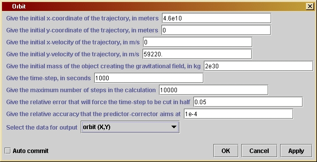
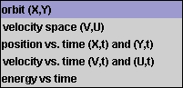

Orbitversion 1.0
© 2003 Bernard Schutz
|
The user can choose the mass of the central object, the starting position and velocity of the satellite, the basic time-step for advancing the orbit step-by-step, and the maximum number of time-steps. If the orbit is bound, the program will end after it computes a single orbit, provided the maximum number of steps has not been reached. If the orbit is not bound, so that the satellite flies away, then the program will end only after the maximum number of steps has been reached. The mathematics for this is essentially the same as for the program EarthOrbit, and is described in Investigation 4.1.
In addition the user can choose two numbers that regulate the accuracy of the calculation. They are used by two new numerical techniques that are introduced in this program: an adjustable time-step, and the so-called predictor-corrector iteration for improving the accuracy of each time-step. (Users can control these accuracy-improving techniques without having to know the details of how they are implemented. Users who want to know the details will find them described in Investigation 4.2 and below.) Finally, the user can choose several kinds of data to output, so that detailed investigations of the results are possible. For example, by outputting the position as a function of time, the user can find out the period of the orbit. The user can also output measures of energy, to verify the law of conservation of energy, as described in Chapter 6.
Users can experiment with the accuracy and the initial conditions to verify the theorem that bound orbits are ellipses, while unbound orbits are hyperbolas. They can also choose initial conditions to simulate different kinds of systems. The initial data provided by default with the program simulates the orbital motion of Mercury around the Sun. By changing the data, users could look at the Moon going around the Earth, or comets around the Sun.
Orbit is the foundation program for all of our later explorations of motion in this book. The programs that solve for the motion of two stars in a binary system, that examine the three-body problem and show how stars are expelled from such systems, that calculate orbits around black holes, and that study the expansion of the Universe after the Big Bang are all relatively straightforward modifications of Orbit. If you master this program you will open the door to learning about a huge variety of physical systems.
Initially the graph window will adjust its scales to the orbit of Mercury. To get a plot that shows the orbit correctly, go to the "Plot" menu of the SGTGrapher display, and select "force equal ranges on both axes", then press "Reset Zoom". This ensures that the x- and y- axes are scaled in the same way. Optionally, if you find the axis labels difficult to read, you can select "take out common factors of 10 from data" for a less cluttered display. You will have to re-run the computation to get the display to change. If you choose output options (below) that don't require the scales to be the same, then un-select this option in the "Plot" menu.
You can change ten parameters by opening the parameter window: double-click on the unit's icon when it is in the working area to get a window like the one shown to the left. The orbit parameters have default values for Mercury's orbit around the Sun. The first two lines set the x- and y-positions of the starting point, in meters from the location of the central mass. The third and fourth lines give the components of the initial velocity of the body, in ms-1. The fifth line is the mass of the central body in kg (default is the mass of the Sun). The sixth line gives the initial time-step. The value of this is not critical, since it will be reduced if accuracy requires it. But don't set it too small, since it won't be increased by the program, and if it is too small you will have to wait for a long time for the answer. The seventh line gives the maximum number of time-steps in the calculation. This will stop the calculation if the orbit is not closed or if this number of steps is reached before it closes. You should experiment with changes in this. The eighth line gives the error allowed for the time-step reduction. If the fractional change in a component of the acceleration has this size, then the time-step will be reduced. The default value, 0.05, is fairly large. You should experiment with reducing it. The ninth line sets the allowed error for the predictor-corrector, which ensures that the change in the acceleration over the time-step is calculated accurately. Again you should experiment with changes in this.
The final line is a choice box which allows you to choose the kind of information that will be output. This is a more advanced option and is designed, among other things, to help you in later chapters in the book. When the program is first introduced, in Chapter 4, you will only really need the default output option, but in Chapter 6 you will need more. The list of choices is shown here.
The computer must be told, of course, what accuracy you want. The
program's parameter window allows you to tell it the accuracy limit by
giving a dimensionless number which is a measure of the relative
error
you can tolerate in assuming a constant acceleration. This number is
stored
in the variable eps1. The relative
error
is just the fractional change in the acceleration during the time-step.
Of course, until we calculate the orbit accurately, we won't know where
the planet is at the end of the time-step, so we can't exactly
calculate
the acceleration at that time. But we can get a fairly good idea of its
size by just pretending the planet moves according to a constant
acceleration
given by the acceleration at the beginning of the current time-step.
These
acceleration components are called ax0
and ay0
in the program.
If the acceleration ax is constant, then the x-velocity
of
the planet changes in a time Dt by the
amount Dv
= ax Dt. This is stored in the
variable dv. The x-position changes
with
a velocity that is the average of the beginning x-velocity v and the
ending
x-velocity v + Dv. This average is v + Dv/2,
so the change in position is
Dx = vDt + (Dv/2)Dt.
The program defines two new variables to hold the values of the two
terms in this expression: dx holds vDt
(computed as v*dt1) and ddx0
holds (Dv/2)Dt
(computed as dv/2*dt1). Notice that dx
is independent of the acceleration, but the accuracy of ddx0
depends on the accuracy of the acceleration, which affects dv.
Therefore the program also defines a variable ddx1,
which it later uses to hold an improved value of this term in the
predictor-corrector
step. All of this is done in the same way for y as well as x.
The measure of accuracy that influences the time-step is not
particularly
sophisticated. The change in acceleration is computed by finding the
acceleration
at the new position ( x1,y1),
where x1 holds the value of x + Dx
as above, and similarly for y. This acceleration is stored in (ax1,ay1).
The change in the x-acceleration, ax1-ax0,
should not be too large. Nor should the change ay1-ay0.
The program simply computes the sum of the absolute values of the
changes,
Math.abs(ax1-ax0)
+ Math.abs(ay1-ay0),
and compares it with the sum of the absolute values of the acceleration
components at the beginning of the time-step,
Math.abs(ax0)
+ Math.abs(ay0).
If the change is larger than the number eps1
times the original, then the time-step is halved and the whole step is
done again. Thus, the code has an if
statement
with the test
Math.abs(ax1-ax0)+Math.abs(ay1-ay0)
> eps1*(Math.abs(ax0)+Math.abs(ay0))
This test is not the only test one could use, but it is important to
remember that the test is only used to shorten the time-step; the
values
computed for the test are not used in the computation of the orbit of
the
planet. One could use the squares of the quantities instead of their
absolute
values, for example, and the result would not be very different. The
important
thing is to choose the value of eps1
small
enough that the test will reduce the time-step before errors begin to
creep
into the calculation.
If you want to see what happens without a time-step correction, you don't need to change the program. Just set eps1 to some large value, like 10. Then the test will never be satisfied and the time-step will never be changed.
The predictor-corrector method addresses the problem we mentioned
above, that the acceleration at the end of a time-step must be known so
that we can accurately calculate the change in velocity and from the
that
change in position, but the acceleration can't be known until we know
what
the change in the position is, since the acceleration depends on
position.
This is a kind of chicken-and-egg problem, and the predictor-corrector
method is perfect for solving it. The idea is to find a series of
successively
more accurate approximations to the final position. The method performs
an iteration, which is the mathematical word to describe doing
the
same thing over and over again. Under normal circumstances, this
iteration
should produce a result that converges to the correct position.
Note that all we want to improve is our value for what we call ddx = (Dv/2)Dt and ddy=(Du/2)Dt. We start out with our first approximation, which is the one we used above to find (x1,y1) using the acceleration at the beginning of the time-step to find Dv. Having found our approximation to the new position, we then use this to find the acceleration at the end of the time-step, which is stored in (ax1,ay1), as described above. Now we are ready to start the iteration.
First we use the beginning and ending accelerations to compute a
better
value for the change in speed (Dv,Du)
by averaging the acceleration. For example, the program contains the
following
statement for the x-velocity change:
dv =
(ax0
+ ax1)/2*dt1;
The next step is to compute a better value for ddx, which we store
in the variable ddx1:
ddx1 =
dv/2*dt1;
This and the better value of ddy stored in ddy1 are tested to see if
they are very different from the values held in ddx0 and ddy0. If they
are then the iteration repeats. If not, then we assume that we have
converged
well enough on the right value of the position and the iteration stops.
Each of these steps -- the test, the repeat, the exit -- needs to be
discussed
a little.
The test is similar to the test we used for the time-step
adjustment.
There is an if statement with the test
Math.abs(ddx1-ddx0)
+ Math.abs(ddy1-ddy0) > eps2 * testPrediction
where the value of testPrediction was computed just before the
predictor-corrector
iteration:
testPrediction
= Math.abs(ddx0) + Math.abs(ddy0);
This holds the original size of ddx. The test above says that if the
change in the estimate of ddx is larger than the small number eps2
times the original, then the iteration will continue. It will stop only
if the change in the estimated value of ddx during the last iteration
is
sufficiently small.
If the iteration repeats, then the program stores the most recently computed values of ddx1 and ddy1 into the variables ddx0 and ddy0. That ensures that when the test is applied again, after new values of ddx1 and ddy1 have been computed, the changes that are used in the test, like ddx1-ddx0, are indeed the changes in the most recently computed approximations to ddx. To complete the preparations for the next iteration, the position is updated and the acceleration at the new position is computed.
To exit from the iteration, we just use the break statement, which ensures that the next statement to be executed is the one following the loop. This one uses the previously computed values of ddx and ddy (since they are now known to be good enough) to move the planet to the beginning of the next time-step, finds the acceleration there, and stores the resulting position in the arrays used to keep position information. Then, if the orbit has not yet closed, the computer goes on to the next time-step.
Notice that we have coded the predictor-corrector with a for loop that has 10 steps (with index k counting the steps). Even if the predictor-corrector has not converged, we exit the loop after 10 iterations. This is a safety measure: if the program has not converged by 10 steps, it may well never converge. We don't want the program to loop around forever waiting for convergence.
As for the time-step changer, f you want to see what happens without the predictor-corrector, you don't need to change the program. Just set eps2 to some large value, like 10. Then the test will never be satisfied and the predictor-corrector iteration will not take place.
It is important to understand what the predictor-corrector does and does not accomplish. Its only purpose is to get the best possible value for the position at the end of the time-step, within the finite-difference approximation, i.e. within the approximation that the position advances by the average velocity during the time-step and the velocity changes by the average acceleration. The predictor-corrector does not do better than this approximation, and so if the acceleration were constant the predictor-corrector would not improve things further. If the time-step is too large, for example, the predictor-corrector will not cure that problem. Therefore, the two kinds of accuracy improvements that we have implemented in this program are complementary; they act at different places in the calculation.
It is surprisingly complex to decide when the orbit has gone around
once. Since the intial position and velocity can be freely chosen by
the
user, we must cope with orbits that go clockwise or counter-clockwise,
and with orbits that start on the x-axis, the y-axis, or within any
quadrant.
The way we implement the test in this program is to compute the angular
position of the starting point, then monitor the angular position of
the
orbit at every subsequent time-step, and stop the calculation when the
orbit comes back to the starting angle. Each of these simple ideas
needs
to be implemented carefully.
Computing an angle is itself not a trivial matter, because angles are not uniquely defined. If an angle has a value a, then the same angle could be represented by a+2p or by a-2p. Mathematical functions that compute angles have to return a unique value, which might be 2p or 4p away from the value we want to compare it with. So we must always be careful about this ambiguity. The best way to compute the angle in Java is to use the function Math.atan2, which takes two arguments, say a and b, and returns the polar angle of the point (b,a) in the x-y plane, i.e. the angle between the x-axis and the radial line from the origin to the point (b,a). (Be careful about the order of the arguments in the function: the y-argument comes first!) By convention, this value is between -p and +p.
Now, in the program we compute the intial angular position and
assign
it to the variable angleInitPos:
double
angleInitPos = Math.atan2(yInit, xInit);
The arguments are the variables that hold the initial location of the
planet, with the y-position first as noted above. Suppose, for
simplicity,
that the orbit starts in the first quadrant, or on the x-axis, and
moves
counter-clockwise, i.e. in the direction of increasing angular
position.
At each time-step we calculate the current angular position, which is
held
in the variable angleNow. What is the
difference
in the angles? At first, the difference will be simply angleNow-angleInitPos,
but at some point the orbit will go into the third quadrant and the
value
of angleNow will be somewhere between -p and
0. Taking the difference angleNow-angleInitPos
will now not give the right angular difference. Instead, we will have
to
add 2p to angleNow
to get the "right" angular position now. The way we cope with this
problem
in the present program is to ensure that the angular difference in the
orbit is itself confined in the range between -p
and +p. We test it to see if it goes
outside
this range, and if it does we add or subtract 2p
as necessary to restore it to this range.
It is then a relatively simple matter to decide if the orbit has returned to the beginning. If the orbit is counter-clockwise, we just look for the point where this angular difference becomes positive again: as the orbit approaches its starting point, it does so from negative angular differences. If the orbit is clockwise, we look for the angular difference to become negative again.
The word "again" hides a further complication we need to consider: of course, at the very beginning the angular difference was also positive for counter-clockwise orbits and negative for clockwise ones. We don't want the program to stop after the first time-step, so we must prevent it from applying the test for closure until after the orbit has gone more than half-way around. The half-way point is exactly where the sign of the angular difference changes (for clockwise orbits, the angular difference is positive at first but becomes negative -- because we subtract 2p -- after the half-way point).
Finally, how do we know if the orbit is clockwise or counter-clockwise? We check for that in the very beginning by looking at the initial velocity of the planet as well as its position. If the velocity vector makes an angle that is positive with respect to the position angle, then the orbit will move off in the positive direction, and the orbit will be counter-clockwise.
The program uses several boolean variables to keep track of the
conditions
that we have just met. It defines counterclockwise,
which is true if the orbit is
counter-clockwise
and false otherwise. It defines halfOrbit
to keep track if the orbit has gone half-way; this starts out with the
value false and is set to true
when the test for completing half an orbit, mentioned above, is
satisfied.
This test, of course, depends on the value of counterclockwise.
And the test can only be applied if the orbit has not yet gone
half-way.
Therefore the program contains the following code near the end of each
time-step:
if (!halfOrbit) {
if (counterclockwise) halfOrbit = (anglediff < 0);
else halfOrbit = (anglediff > 0);
}
This is executed only if we are not yet halfway. When it is executed,
then for a counterclockwise orbit the value of halfOrbit
is set to the value of the boolean expression (anglediff
< 0). This expression uses the conditional operator <
(less-than). If anglediff is less than
0
then it evaluates to true and the
statement
then sets the value of halfOrbit to true.
For clockwise orbits the third line above is executed, changing halfOrbit
to true if the angular difference has
become
positive.
The third boolean is fullOrbit,
which
is false at first and is set to true
when we pass the test for a full orbit. This test is implemented as the
else
clause of the if statement given just above, which ensures that we only
test for a full orbit if we have already gone halfway around:
else {
if ( counterclockwise ) fullOrbit = (anglediff > 0);
else fullOrbit = fullOrbit = (anglediff < 0);
}
The test has the same kind of structure as above, but now the
conditions
are arranged so that they test for a full orbit. Once fullOrbit
is true, the loop over time-steps
finishes.
You could implement Hooke's law by changing the code for the
acceleration.
For example, before the for loop, there is at present the code
double
ax0 = -kGravity*x0/r3;
double
ay0 = -kGravity*y0/r3;
This computes the acceleration by multiplying the Newtonian law k/r2
by the appropriate fraction x/r or y/r to get the components in the x-
and y-directions, respectively. If we replace the Newtonian law by kr
and
then again multiply by the appropriate fractions, we would use the code
double
ax0 = -k*x0;
double
ay0 = -k*y0;
To use this you would have to define the constant k
in a sensible way. One way is to ensure that the acceleration of
Mercury
has roughly the same size in both laws, ie take k
to equal kGravity/r3 when r3
is the cube of the radius of Mercury's orbit. By making replacements of
this kind throughout the code, you can see how a Hooke's law solar
system
would look. In particular, the orbits should again be closed, but they
will not be ellipses.
You could experiment with other force laws just for fun. For
example,
a 1/r3 force law would need the code
double
ax0 = -k*x0/r4;
double
ay0 = -k*y0/r4;
where r4 is the fourth power of the
radial
distance r, and where this k
would be defined so that it equals kGravity*r
at Mercury's orbit. What kinds of orbits do you get with this law?
Finally, and perhaps most interestingly, experiment with a
modification
of Newton's law where a small correction is added with a different
power.
Thus, a law with the total acceleration -kGravity/r2 - k/r4 could be
coded
as
double
ax0 = -kGravity*x0/r3*(1 + eps3/r2);
double
ay0 = -kGravity*y0/r3*(1 + eps3/r2);
where r2 is the square of the radius and eps3 is a number chosen so
that the second term is small on Mercury's orbit. This could be, say,
0.1
times the square of the radius of Mercury's orbit. You will find that
these
orbits do not quite close, but instead describe elegant rosettes if
continued
for more than one orbit. (You will have to implement the
above-mentioned
suggestion that the program be allowed to output more than one orbit if
you want to see these patterns.) Historically, various astronomers
tried
to find small modifications of Newton's law of gravitation when it was
discovered that Mercury moves on an orbit that is rosette-like, and the
amount by which an orbit does not close (called its orbital precession)
was not explainable by the tidal effects of Jupiter or the other
planets.
In the end, Einstein explained the effect exactly by modifying Newton's
law in a big way: he introduced general relativity. We will see in the
program RelativisticOrbit
that the effective acceleration law used by Einstein is exactly of the
form suggested here.
/*
xInit is the initial value of the
x-coordinate of the planet,
in meters. Similarly, yInit is the
initial value of the
y-coordinate. These are given
default
values but their values for
any run are set by the user in the
parameter window.
*/
private double xInit;
private double yInit;
/*
vInit and uInit are the initial
values of the x- and y-
velocities, respectively, in meters
per second. These
are given default values but their
values for any run
are set by the user in the parameter
window.
*/
private double vInit;
private double uInit;
/*
M is the mass (in kg) of the object
creating the gravitational field
in which the orbit is computed.
The default value is the mass of the
Sun, but it is set by the user in
the parameter window.
*/
private double M;
/*
dt is the time-step in seconds.
It has a default value but it can
be set by the user in the parameter
window.
*/
private double dt;
/*
maxSteps is the maximum number of
steps in the calculation. This is
used to ensure that the calculation
will stop even if initial values
are chosen so that the projectile
goes far away. It is given
a default value but it can be set
by the user in the parameter window.
*/
private int maxSteps;
/*
eps1 sets the accuracy of the
time-step.
If computed quantities
change by a larger fraction than
this in a time-step, the time-step
will be cut in half, repeatedly
if necessary. Its value for any run
is set by the user in the parameter
window.
*/
private double eps1;
/*
eps2 sets the accuracy of the
predictor-corrector
step. Averaging
over the most recent time-step is
iterated until it changes by
less than this relative amount.
Its value for any run is set by
the user in the parameter window.
*/
private double eps2;
/*
outputType regulates the data that
is to be output from the program.
The computation produces many kinds
of data: positions, velocities,
energies. In order to make them
accessible, the user can select a
value for this String, and the unit
will output the required data.
First-time programmers can safely
ignore these output issues, which
add some length to the program,
although in a straightforward way.
Here are the choices and the data
that they produce:
- "orbit (X,Y)" is the default
choice
and produces the orbit of the
planet drawn in the
X-Y plane of the orbit. The unit outputs this
data from a single
output
node, which should be connected to the
graphing unit.
- "velocity space (V,U)" produces
a curve in what physicists call
velocity space, a graph
whose axes are the x- and y-components of
the velocity. Since
a planet on a closed orbit also comes back to
the same velocity after
one orbit, the graph of this curve will
be closed for such an
orbit. The unit outputs this data from a
single output node,
which should be connected to the graphing unit.
- "position vs. time (X,t) and
(Y,t)"
produces two curves, one giving
the value of the
X-coordinate
(vertical axis of the graph) against
the time along the orbit
(horizontal axis) and the second giving the
Y-coordinate against
time. To produce this data the unit automatically
changes the number of
its output nodes to two as soon as the user
selects this option
in the user interface window; the first output
node produces a curve
of (X,t) and the second output node produces
(Y,t). The user should
connect both nodes to the grapher to
see both curves at once.
Alternatively, if only one is connected to
the grapher then only
that particular coordinate will be displayed.
To connect two inputs
to the grapher the user must use the grapher
unit's node window to
set the number of input nodes to two.
- "velocity vs. time (V,t) and
(U,t)"
This does the same as the
previous choice except
that it produces the x- and y-components of
the velocity (V and
U) as functions of time instead of the
coordinate positions.
Again the unit changes its number of output
nodes to two, and the
user must change the grapher's input nodes to
two as well.
- "energy vs time" This produces
three curves: the potential energy,
the kinetic energy,
and the total energy, all as functions of time.
The unit changes itself
to three output nodes and the data are output
in the order given in
the previous sentence. To see all three at
once, as in the figure
in the text, modify the number of input nodes
of the grapher to three
and connect them all.
*/
private String outputType;
/*
This variable is for internal use
and is not set by the user.
*/
private TaskInterface task;
public void process() throws Exception {
/*
Define and
initialize the variables we will need. The position
and velocity
components are referred to an x-y coordinate system
whose origin
is at the central gravitating mass. We need the
following
variables for the calculation:
- t is the
time since the beginning of the orbit.
- dt1 will
be used as the "working" value of the time-step, which can
be changed during the calculation. Using dt1 for the time-step allows
us to keep dt as the original value, as specified by the user. Thus,
dt1 is set equal to dt at the beginning of the calculation, but it may
be
reduced at any time-step, if accuracy requires it.
- v and
u are the x- and y-speed, given here their initial values.
- x0 and
y0 are variables that hold x- and y-coordinate values.
- r is the
distance of the point (x0, y0) from the central mass.
- r3 is
the cube of the radial distance.
- kGravity
is the constant GM in Newton's law of gravity, where G is
Newton's gravitational constant.
- ax0 and
ay0 are the x-acceleration and y-acceleration, respectively,
at the location (x0, y0).
-
xCoordinate
and yCoordinate are used to store the values of
x and y at each timestep. They are arrays of length maxSteps.
- xVelocity
and yVelocity are arrays that are used to store the values
of the velocity components at each timestep.
-
potentialEnergy
and kineticEnergy are arrays that are used to store
the values of the potential and kinetic energy of the planet, taking
its mass to equal 1. (The mass of the planet is not needed for the
other calculations in this program, and since both energies are
simply proportional to the mass, the energies for any particular
planetary mass can be obtained by multiplying these values by
the mass after they are output from the program.)
- time is
an array that is used to store the value of the time
associated with the current position, as measured from the
beginning of the orbit.
*/
double t = 0;
double dt1 = dt;
double v = vInit;
double u = uInit;
double x0 = xInit;
double y0 = yInit;
double r = Math.sqrt(
x0*x0 + y0*y0 );
double r3 = r*r*r;
double kGravity = M
* 6.6726e-11;
double ax0 =
-kGravity*x0/r3;
double ay0 =
-kGravity*y0/r3;
double[] xCoordinate
= new double[ maxSteps ];
double[] yCoordinate
= new double[ maxSteps ];
double[] xVelocity =
new double[ maxSteps ];
double[] yVelocity =
new double[ maxSteps ];
double[] potentialEnergy
= new double[ maxSteps ];
double[] kineticEnergy
= new double[ maxSteps ];
double[] time = new
double[ maxSteps ];
xCoordinate[0] = x0;
yCoordinate[0] = y0;
/*
Now define
other variables that will be needed, but without giving
initial
values. They will be assigned values during the calculation.
- x1 and
y1 are temporary values of x and y that are needed during the
calculation.
- ax1 and
ay1 are likewise temporary values of the x- and y-acceleration.
- dx and
dy are variables that hold part of the change in x and y that
occurs during a time-step.
- ddx0,
ddy0, ddx1, and ddy1 are variables that hold other parts of
the changes in x and y during a time-step. The reason for having both
dx and ddx will be explained in comments on the calculation below.
- dv and
du are the changes in velocity that occur during a time-step.
-
testPrediction
will hold a value that is used by the predictor-corrector
steps to assess how accurately the calculation is proceeding.
- angleNow
holds the angular amount by which the planet has advanced in its
orbit at the current time-step.
- j and
k are integers that will be used as loop counters.
*/
double x1, y1, ax1,
ay1, dv, du, dx, dy, ddx0, ddy0, ddx1, ddy1;
double testPrediction,
angleNow;
int j, k;
/*
Finally,
we introduce some variables that are used to determine when the
trajectory
completes a full orbit, so that the program can stop. This is
not a simple
job, if we want to be able to handle any starting position
and any
starting velocity. The idea is to determine from the initial
position
and velocity whether the trajectory will move in the clockwise
or
counterclockwise
direction around the central mass. Having established
that, then
we will write code below that checks to see if the angular
position
of the trajectory has become larger (in the counterclockwise case)
or smaller
(clockwise) than the starting position. If so, then the program
stops, since
the original position has been passed. Of course, at the very
start the
orbit satisfies these conditions as well, so the test can only
be applied
after the orbit has gone at least half-way. The variables that
are needed
in order to perform these tests are as follows:
-
angleInitPos
is the angle that a line from the origin to the initial
position makes with the x-axis. Like all the other angles, it is
computed
from the initial data using the Math.atan2 function. This returns a
value between -Pi and +Pi radians.
-
angleInitVel
is similarly the angle that the initial velocity vector
makes with the x-axis
- anglediff
is the angle between the position and velocity, which is
used to decide whether the orbit will move in the clockwise or
counter-clockwise direction. The comments just before its definition
explain how we ensure that it is in the same range (-Pi, Pi) as the
other angles.
-
counterclockwise
is a boolean variable (true/false) which is true if
the orbit moves in the counterclockwise direction, false otherwise
- fullOrbit
ia another boolean variable that will be set to true when
the orbit returns to its starting point, so that the calculation can
stop. Its initial value is set to false.
- halfOrbit
is a boolean variable that begins with the value false, and
will be set to true when the orbit has gone half-way around.
*/
double angleInitPos
= Math.atan2(yInit, xInit);
double angleInitVel
= Math.atan2(uInit, vInit);
/*
Since the
two initial angles will both be in the range (-Pi, Pi), their
difference
anglediff can be anywhere between (-2*Pi, 2*Pi). In order to
put
anglediff
into the same range as the other angles, one can add or
subtract
2*Pi to it without changing the actual location of the angle. So
if the angle
is larger than Pi, subtract 2*Pi to set it between Pi and -Pi;
similarly
if it is smaller than -Pi, add 2*Pi to set it between Pi and -Pi.
*/
double anglediff =
angleInitVel
- angleInitPos;
if ( anglediff >
Math.PI
) anglediff -= 2*Math.PI;
else if (anglediff <
-Math.PI) anglediff += 2*Math.PI;
boolean counterclockwise
= ( anglediff > 0 );
boolean fullOrbit =
false;
boolean halfOrbit =
false;
/*
Now start
the loop that computes the trajectory. The loop counter
is j, which
(as in EarthOrbit) starts at 1 and increases by 1 each
step. The
test for exiting from the loop will be either that the
orbit has
gone once around, or that the number of steps exceeds
the maximum
set by the user. This latter test is important because
some orbits
do not close: if the initial velocity is too large the
trajectory
simply goes off to larger and larger distances. The
logical
expression that provides the test is
!fullOrbit && ( j < maxSteps )
Note the
use of the logical negation operator !: !fullOrbit is true
when
fullOrbit
is false, i.e. before the end of the orbit, so it
allows the
loop to continue.
*/
for ( j = 1; (
!fullOrbit
&& ( j < maxSteps )); j++ ) {
/*
- Set dv and du to the changes in x- and y-speeds that would occur
during time dt1 if the acceleration were constant at (ax0, ay0).
- Similarly set dx and dy to the changes in position that would
occur if the velocity components v and u were constant during the
time dt1.
- Set ddx0 and ddy0 to the extra changes in x and y that occur because
the velocity changes during the time dt1. The velocity change that
is used is only dv/2 (or du/2, respectively) because the most
accurate change in position comes from computing the average
velocity during dt1. We separate the two position changes, dx and
ddx0, because dx will be unchanged when we do the predictor-corrector
below (the change in position due to the original speed is always
there), while ddx0 will be modified when ax0 and hence dv is modified
by the predictor-corrector.
- Finally, set ddx1 and ddy1 to ddx0 and ddy0 initially. They will
change when we enter the predictor-corrector code.
*/
dv = ax0*dt1;
du = ay0*dt1;
dx = v*dt1;
dy = u*dt1;
ddx0 = dv/2*dt1;
ddy0 = du/2*dt1;
ddx1 = ddx0;
ddy1 = ddy0;
/*
Now advance the position of the satellite by our initial estimates of
the position changes, dx + ddx0 and dy + ddy0. Compute the radial
distance of this new position and the acceleration there.
*/
x1 = x0 + dx + ddx0;
y1 = y0 + dy + ddy0;
r = Math.sqrt( x1*x1 + y1*y1 );
r3 = r*r*r;
ax1 = -kGravity*x1/r3;
ay1 = -kGravity*y1/r3;
/*
Time-step check.
This is the code to check whether the time-step is too large. The idea
is to compare the changes in acceleration during the timestep with the
acceleration itself. If the change is too large a fraction of the
original value, then the step is likely to be too large, and the
resulting
position too inaccurate. The code below cuts the time-step dt1 in half
and then goes back to the beginning of the loop. This is explained
below.
But first we explain the test itself.
There is no unique test for this, nor does there need to be. If the
time-step
is cut in half the calculation will be more accurate, so generally in
a test like this one tries to formulate the test just to make sure that
some kind of inaccuracy is being measured. Here the test is to compute
the absolute value of the change in the x-acceleration, ax1-ax0, and add
that to the absolute value of the change in the y-acceleration, ay1-ay0,
to get a measure of how big the change in acceleration is. This is then
compared with the "original" acceleration, which is similarly measured
by the sum of the absolute values of the components of the acceleration
at the start of the time-steps, |ax0| + |ay0|. The comparison is
simple: the user chooses the small number eps1, and if the changes
are larger than eps1 times the original, then the time-step is changed.
The test has the form of the logical comparison
change > eps * original
where "change" and "original" are computed as above.
The action that is taken is simple:
- If the changes are too large, the time-step is cut in half (dt1 /= 2)
and the loop index j is decreased by 1 (j--). Nothing else happens after
this point in the loop: the rest of the code after this is inside the
"else"
clause that is executed if the change is small enough. So this pass
through the loop ends after the statement "j--;". The reason for
decreasing j is that the "for" statement automatically increases
j each time, but we want j to remain the same, since we are re-doing
the same time-step with a smaller value of dt1.
- If the changes are sufficiently small, the "else" clause is executed
instead. This keeps the value of dt1 the same. The "else" clause
contains the predictor-corrector step that is described in the comments
below.
*/
if ( Math.abs(ax1-ax0) + Math.abs(ay1-ay0) > eps1*(Math.abs(ax0) +
Math.abs(ay0))
){
dt1 /= 2;
j--;
}
else {
/*
Predictor-corrector step.
Now that the time-step dt1 is fixed, we address the other new feature
of this program, which is to ensure that the position changes are
computed using the average velocity over the time dt1. This in turn
requires us to calculate the velocity change, also by averaging the
acceleration. But the acceleration is a function of position, so we
do not know how to average it until we find the final position. This
is a circular requirement, and cannot be solved in a single step.
However, it can be solved iteratively. That is, one can make a guess
and keep refining it.
The initial guess has already been made: we have computed values of
dx, dy, ddx0, and ddy0 from the data available at the beginning of
the current time-step. Recall that dx and dy depend only on the
velocity at the beginning of the time-step, but ddx0 and ddy0 depend
on the acceleration. So we will refine them, computing replacement
values ddx1 and ddy1 as we get better values for the acceleration at
the end of the time-step. The refinement is done in another loop, whose
counter is k below. Before enetering the loop, we define a
variable called testPrediction which stores a measure of how large
the initial guesses are, so that we can stop the iteration when the
refined values do not change by much.
The for loop is limited to at most 10 iterations. This is to prevent
it from getting stuck for some reason and never finishing. Ten
iterations should be sufficient for any reasonable problem.
*/
testPrediction = Math.abs(ddx0) + Math.abs(ddy0);
for ( k = 0; k < 10; k++ ) {
/* compute dv and du by averaging the acceleration over dt1 */
dv = (ax0 + ax1)/2*dt1;
du = (ay0 + ay1)/2*dt1;
/* compute ddx1 and ddy1 by averaging the velocity change */
ddx1 = dv/2*dt1;
ddy1 = du/2*dt1;
/*
Test the change in ddx and ddy since the last iteration.
If it is more than a fraction eps2 of the original, then
ddx and ddy have to be re-computed by finding the acceleration
at the refined position.
If the change is small enough, then the "else:" clause is
executed, which exits from the for loop using the statement
"break". This finishes the iteration and goes on to wrap up
the calculation.
*/
if ( Math.abs(ddx1-ddx0) + Math.abs(ddy1-ddy0) > eps2 *
testPrediction
) {
/* Re-define ddx0 and ddy0 to hold the values from the last iteration */
ddx0 = ddx1;
ddy0 = ddy1;
x1 = x0 + dx + ddx0;
y1 = y0 + dx + ddy0;
r = Math.sqrt( x1*x1 + y1*y1 );
r3 = r*r*r;
ax1 = -kGravity*x1/r3;
ay1 = -kGravity*y1/r3;
/*
We now have the "best" acceleration values, using the most
recent estimates of the position at the end of the loop.
The next statement to be executed will be the first statement
of the "for" loop, finding better values of dv, du, ddx1, and
ddy1.
*/
}
else break;
}
/*
The iteration has finished, and we have sufficiently accurate
values of the position change in ddx1 and ddy1. Use them to get
final values of x and y at the end of the time-step dt1 and store
these into x0 and y0, ready for the next time-step. Compute all
the rest of the variables needed for the next time-step and for
possible data output.
*/
t += dt1;
x0 += dx + ddx1;
y0 += dy + ddy1;
ax0 = ax1;
ay0 = ay1;
v += dv;
u += du;
xCoordinate[j] = x0;
yCoordinate[j] = y0;
xVelocity[j] = v;
yVelocity[j] = u;
r = Math.sqrt( x0*x0 + y0*y0 );
potentialEnergy[j] = -kGravity/r;
kineticEnergy[j] = 0.5*(v*v + u*u);
time[j] = t;
/*
Now test to see if the orbit has closed, i.e. if we have gone around
the central mass once. We do this by computing the change in the
angular position of the orbit from its starting position, using the
same code for keeping the angular difference between -Pi and +Pi as
we used at the beginning of the program. This is stored in anglediff
as before. Once anglediff has been calculated, we enter the code
that tests for the completion of the orbit. It is based on an "if"
statement. The first part of the statement is executed if !halfOrbit is
"true", i.e. if at the previous step we were not yet half-way around
the central mass. The purpose of this part is to test the value of
anglediff to see if we have gone half-way by the present step. The
test depends on whether the orbit goes counterclockwise or not, so
this part of the overall "if" statement contains another "if". If
we are going counterclockwise, then in previous steps the value of
anglediff has been increasing. When it reaches Pi, we are half-way. It
will never exactly equal Pi, since our steps are not chosen to make
an integer number of divisions of the orbit, so we recognize that we
have gone half-way by allowing anglediff to get larger than Pi.
However, we know from the previous lines of code that when anglediff
is larger than Pi, we subtract 2*Pi, and therefore it becomes
negative. This is therefore the test: if anglediff is negative, we
know we have gone half-way, and we set the value of halfOrbit to true.
If the orbit were a clockwise orbit, then this is reversed: the
first time anglediff goes positive, we set halfOrbit to true.
If, however, we have already gone half-way by the time of the present
time-step, then the "else" clause of the overall "if" statement
will execute. This looks for the end of the orbit with the opposite
criterion to finding the half-way point. For a counterclockwise orbit,
when anglediff becomes positive again, we have passed through orbital
difference zero, which is where we started, so the orbit has finished.
In the clockwise case, we watch anglediff to see when it goes
negative. This finishes the orbit. We set the value of fullOrbit
to "true". This causes the overall loop around the orbit to finish.
*/
angleNow = Math.atan2(y0, x0);
anglediff = angleNow - angleInitPos;
if (anglediff > Math.PI) anglediff -= 2*Math.PI;
else if (anglediff < -Math.PI) anglediff += 2*Math.PI;
if (!halfOrbit) {
if (counterclockwise) halfOrbit = (anglediff < 0);
else halfOrbit = (anglediff > 0);
}
else {
if ( counterclockwise ) fullOrbit = (anglediff > 0);
else fullOrbit = (anglediff < 0);
}
}
}
/*
The orbit
is finished. Now, as in previous programs, define arrays
to contain
the positions along the orbit with just the right size,
so that
no zeros are passed to the grapher. The value of j at this
point is
equal to the number of elements we need for the output arrays.
But in this
program, we must also check which output choice has been made and
tailor the
output to this choice. This includes, for some choices, multiple
output
nodes,
as in EarthOrbit. First-time programmers can safely
ignore this
section.
*/
if
(outputType.equals("orbit
(X,Y)")) {
double[] finalX = new double[j];
double[] finalY = new double[j];
for ( k = 0; k < j; k++ ) {
finalX[k] = xCoordinate[k];
finalY[k] = yCoordinate[k];
}
Curve out = new Curve( finalX, finalY );
out.setTitle("Velocity of orbit");
out.setIndependentLabels(0,"x (m)");
out.setDependentLabels(0,"y (m)");
output( out );
}
else if
(outputType.equals("velocity
space (V,U)")) {
double[] finalV = new double[j];
double[] finalU = new double[j];
for ( k = 0; k < j; k++ ) {
finalV[k] = xVelocity[k];
finalU[k] = yVelocity[k];
}
Curve out = new Curve( finalV, finalU );
out.setTitle("Velocity of orbit");
out.setIndependentLabels(0,"V (m/s)");
out.setDependentLabels(0,"U (m/s)");
output( out );
}
else if
(outputType.equals("position
vs. time (X,t) and (Y,t)")) {
double[] finalX = new double[j];
double[] finalY = new double[j];
double[] finalT = new double[j];
for ( k = 0; k < j; k++ ) {
finalX[k] = xCoordinate[k];
finalY[k] = yCoordinate[k];
finalT[k] = time[k];
}
Curve out0 = new Curve( finalT, finalX );
out0.setTitle("x(t)");
out0.setIndependentLabels(0,"t (s)");
out0.setDependentLabels(0,"position (m)");
Curve out1 = new Curve( finalT, finalY );
out1.setTitle("y(t)");
outputAtNode( 0, out0 );
outputAtNode( 1, out1 );
}
else if
(outputType.equals("velocity
vs. time (V,t) and (U,t)")) {
double[] finalV = new double[j];
double[] finalU = new double[j];
double[] finalT = new double[j];
for ( k = 0; k < j; k++ ) {
finalV[k] = xVelocity[k];
finalU[k] = yVelocity[k];
finalT[k] = time[k];
}
Curve out0 = new Curve( finalT, finalV );
out0.setTitle("V(t)");
out0.setIndependentLabels(0,"t (s)");
out0.setDependentLabels(0,"speed (m)");
Curve out1 = new Curve( finalT, finalU );
out1.setTitle("U(t)");
outputAtNode( 0, out0 );
outputAtNode( 1, out1 );
}
else if
(outputType.equals("energy
vs time")) {
double[] finalP = new double[j];
double[] finalK = new double[j];
double[] finalE = new double[j];
double[] finalT = new double[j];
for ( k = 0; k < j; k++ ) {
finalP[k] = potentialEnergy[k];
finalK[k] = kineticEnergy[k];
finalE[k] = finalP[k] + finalK[k];
finalT[k] = time[k];
}
Curve out0 = new Curve( finalT, finalP );
out0.setTitle("Potential energy vs time");
out0.setIndependentLabels(0,"t (s)");
out0.setDependentLabels(0,"energy (J)");
Curve out1 = new Curve( finalT, finalK );
out1.setTitle("Kinetic energy vs time");
Curve out2 = new Curve( finalT, finalE );
out2.setTitle("Total energy vs time");
outputAtNode( 0, out0 );
outputAtNode( 1, out1 );
outputAtNode( 2, out2 );
}
}